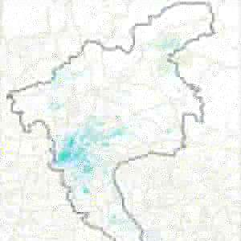

{kind=link}
Methods
Current method family
GIS, remote sensing, POI and OSM integration, spatial statistics, accessibility analysis, simulation, indicator design, and mixed methods.
Research line 03
Research on how multi-source spatial data can be translated into evidence for environmental pressure, spatial provision, spatial mismatch, and planning priorities.
Analysis chain
The featured project links environmental conditions to spatial provision and priority screening without making causal claims.
Selected project evidence
Three provision layers within one project, presented here at the correct analytical level.

Point-based facilities supporting sport, exercise, recreation, and everyday activity.

Polygon-based ecological green areas and spaces supporting recreation and physical activity.

Line-based walking infrastructure used to represent everyday active-mobility provision.
Methods
GIS, remote sensing, POI and OSM integration, spatial statistics, accessibility analysis, simulation, indicator design, and mixed methods.
Evidence boundary
Environmental pressure is not actual demand; spatial provision is not actual use; street-scale association is not causal evidence; project decisions still require field investigation.